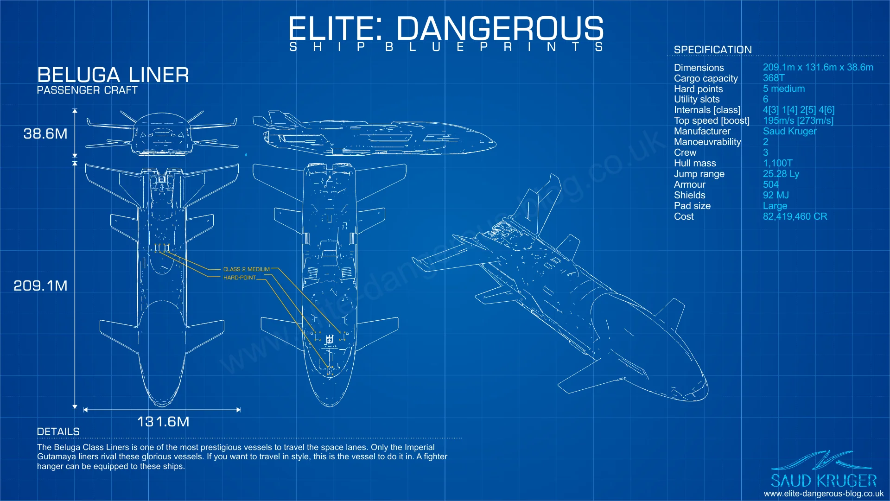

Le vaisseau Beluga Liner est un autre vaisseau de la série Saud Kruger dans Elite Dangerous, reconnu comme l'un des plus grands vaisseaux de passagers disponibles dans l'univers du jeu. Son design imposant et élégant en fait un choix de prédilection pour les voyages de luxe et les croisières interstellaires. Avec sa capacité à accueillir un grand nombre de passagers et son équipement de pointe, le Beluga offre une expérience de voyage haut de gamme, avec des cabines spacieuses, des salons de détente, des restaurants de classe mondiale et des équipements de divertissement de pointe. En plus de son utilisation pour le transport de passagers, le Beluga peut également être modifié pour des missions commerciales ou d'exploration grâce à ses vastes espaces de stockage et sa capacité de transport de fret. Son allure majestueuse et sa polyvalence font du Beluga Liner l'un des vaisseaux les plus emblématiques et convoités de l'univers d'Elite Dangerous. De plus, le Beluga Liner est équipé de moteurs puissants qui lui confèrent une manœuvrabilité surprenante malgré sa taille imposante, ce qui en fait un vaisseau adapté à la fois aux voyages longue distance et aux manœuvres délicates dans des environnements spatiaux complexes. Ses quartiers d'équipage sont conçus pour offrir un confort et des équipements de vie haut de gamme pour les membres d'équipage, garantissant des conditions de travail optimales lors de voyages prolongés. Avec sa combinaison de luxe, de capacité de transport et de performances, le Beluga Liner incarne l'essence du prestige et de la grandeur dans l'univers expansif et diversifié d'Elite Dangerous, attirant les voyageurs en quête d'aventures extraordinaires et de confort incomparable.

Le plan de bord du Beluga Liner dans Elite Dangerous est conçu pour offrir une expérience de voyage confortable à ses passagers. Il comprend plusieurs ponts avec des cabines spacieuses disposées autour d'espaces communs tels que des salons de détente, des restaurants conviviaux et des bars simples. Les passagers peuvent profiter d'installations de divertissement standards, y compris des écrans holographiques, des zones de réalité virtuelle et des vues panoramiques sur l'espace environnant. Les quartiers d'équipage offrent des logements modestes, des salles de repos basiques et des zones de loisirs simples pour assurer le bien-être de l'équipage pendant les longs voyages. En outre, le Beluga Liner offre des systèmes de navigation fonctionnels, des stations de contrôle standards et des interfaces simples pour garantir une gestion efficace du vaisseau et assurer la sécurité des passagers et de l'équipage tout au long du voyage.
{kind=link}